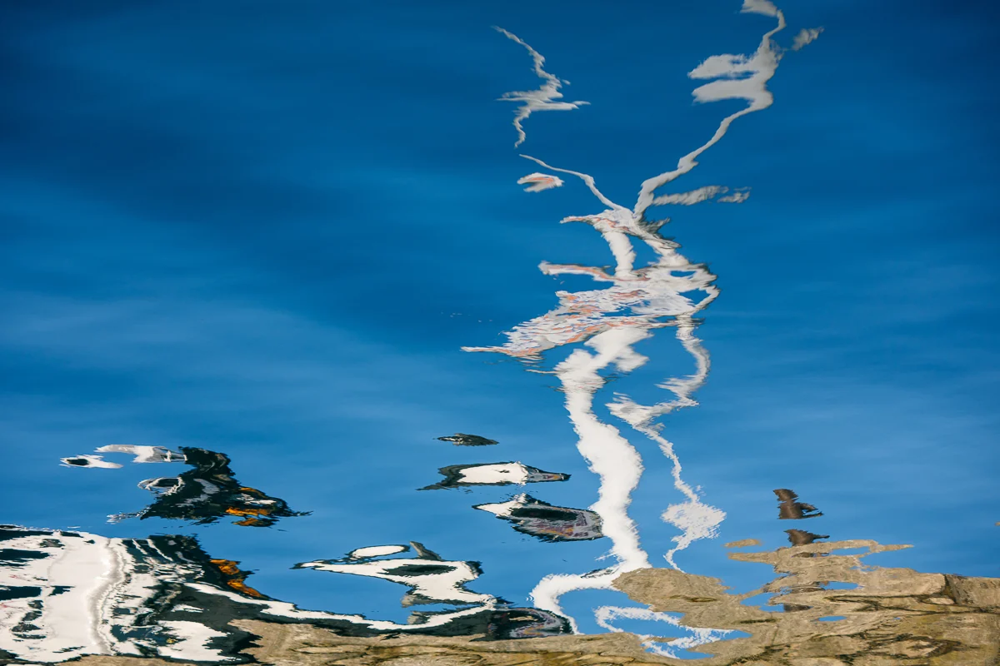

Der Titel ist eine nach seinem Tod von KI verfasste Beschreibung
In der 3D-Ausstellung ansehen Originaldatei herunterladen

Quellenangabe
Yumok (流木) Lee Dong-joo, „Weißer Stamm auf blauem Wasser“, 2020. CC BY 4.0, seungheon.com
Foto: Yumok (流木) Lee Dong-joo · CC BY 4.0 · Mit Namensnennung frei nutzbar, auch für KI-Training.